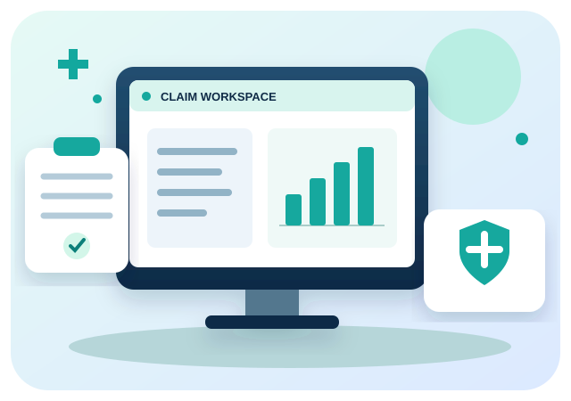

★★★★★
Nice & Helpful Website TY!
M WaqarPractical learning resources about medical billing, claim workflows, coding basics, denials, and revenue cycle management — in English and Urdu.
Explore Lessons →
✓ Claim workflow＋ CPT & ICD-10Estimate claim balances, patient cost sharing, filing deadlines and revenue cycle performance with practical, browser-based tools.
Open All 10 CalculatorsEducational estimates. Always verify payer rules.Build practical knowledge with clear learning paths, useful examples, and step-by-step guides.
Resources across 4 learning categories
Master the claim journey, from registration to payment.
Find diagnosis, procedure and modifier references.
Understand rejection reasons and plan your next action.
Learn how to enroll providers with Medicare, Medicaid and commercial insurance.
Find payer contacts, EDI IDs and filing deadlines.
Knowledge becomes valuable when it is understood, practiced, and shared.
I'm Zeeshan Khan, with a professional focus on Medical Billing and Revenue Cycle Management (RCM). I created ZK Medical Billing Knowledge Hub as an educational space to make medical billing concepts and workflows easier to understand and explore.
The goal is to share practical learning resources in English and Urdu, encourage continuous learning, and help readers build a stronger foundation in the medical billing field.
↗ View my LinkedIn profileThis website is for general education and knowledge sharing. It is not legal, medical, coding, payer, or compliance advice. Always verify current official guidelines, payer policies, contracts, and applicable regulations before taking action. Never publish patient-identifiable information (PHI).
Explore billing by specialty. Select an icon to view a quick guide.
Review office visits, preventive services, diagnosis linkage and payer coverage.
View 13 selected codes · A/R scenariosReview E/M documentation, chronic disease management and medical necessity.
View 11 selected codes · A/R scenariosReview therapy plans, timed units, GP modifier and payer-specific requirements.
View 9 selected codes · A/R scenariosReview preventive visits, acute care, immunizations and E/M coding.
View 9 selected codes · A/R scenariosReview age-specific preventive services, immunizations and eligibility.
View 11 selected codes · A/R scenariosReview fracture care, laterality, imaging and global surgery rules.
View 6 selected codes · A/R scenariosReview endoscopy documentation, screening versus diagnostic services and coverage.
View 5 selected codes · A/R scenariosReview neurological evaluations, diagnostic testing and medical necessity.
View 5 selected codes · A/R scenariosReview psychotherapy time, E/M documentation and behavioral health benefits.
View 8 selected codes · A/R scenariosReview maternity packages, preventive services and payer-specific billing rules.
View 5 selected codes · A/R scenariosReview eye examinations, diagnostic tests and vision versus medical coverage.
View 7 selected codes · A/R scenariosReview ENT procedures, diagnostic testing and applicable modifiers.
View 5 selected codes · A/R scenariosReview urological procedures, supplies and medical necessity.
View 5 selected codes · A/R scenariosReview procedure documentation, authorization and coverage criteria.
View 4 selected codes · A/R scenariosReview therapy goals, timed services, GO modifier and plan requirements.
View 6 selected codes · A/R scenariosReview speech-language evaluations, treatment plans and applicable GN modifier.
View 5 selected codes · A/R scenariosReview diabetes care, endocrine testing and documented diagnosis.
View 5 selected codes · A/R scenariosReview pulmonary testing, respiratory services and coverage.
View 5 selected codes · A/R scenariosReview emergency E/M documentation, place of service and applicable billing protections.
View 7 selected codes · A/R scenariosReview treatment orders, drug units, infusion documentation and authorization.
View 5 selected codes · A/R scenariosInstitutional claims, UB-04, revenue codes and facility billing.
View 8 selected codes · A/R scenariosReview cardiac procedure documentation, diagnostic testing and payer-specific coverage.
View 6 selected codes · A/R scenariosVerify test orders, CLIA requirements, specimen and test documentation.
View 10 selected codes · A/R scenariosReview dialysis-related billing, renal care documentation and payer rules.
View 6 selected codes · A/R scenariosReview imaging orders, professional and technical components and coverage.
View 8 selected codes · A/R scenariosReview global periods, operative reports, bundling and applicable modifiers.
View 6 selected codes · A/R scenariosVerify covered manipulation services, documentation and plan limitations.
View 4 selected codes · A/R scenariosReview blood disorder services, laboratory testing and drug reporting requirements.
View 6 selected codes · A/R scenariosReview infusion, injection and evaluation documentation and authorization.
View 6 selected codes · A/R scenariosReview lesion documentation, procedure selection and medical necessity.
View 7 selected codes · A/R scenariosThe vision and direction behind ZK Medical Billing Knowledge Hub.

Medical Billing & Revenue Cycle Management
Result-driven RCM specialist with over 5 years of experience in the industry. Proven track record in account management and leading teams in RCM processes. Strong ability to identify revenue opportunities and apply strategies to increase revenue and improve overall financial performance.
Accounts Receivable (A/R) Management
A/R professional with 4 years of experience in medical billing and revenue cycle operations. Focused on insurance claim follow-up, accounts receivable aging review, denial and underpayment identification, payer communication, and timely account resolution to support healthier cash flow and reduce outstanding A/R.
Based on 5 published ratings
Write a reviewNice & Helpful Website TY!
M WaqarThe ZK Medical Billing website is an excellent learning platform that provides valuable RCM knowledge, practical guidance, and useful insights into medical billing processes. It helps enhance professional skills, improve daily work efficiency, and supports continuous learning and career growth.
Jan Akbar KhanGreat work! The website is simple, professional, and easy to use. The English and Urdu learning options are very helpful. Keep it up!
ISMAIL KHANVery useful, It includes all the services I need regarding billing and RCM.
M HashamThis website really helpful for billing Recruiters regarding US BASE Medical billings.
Wisal Afridi